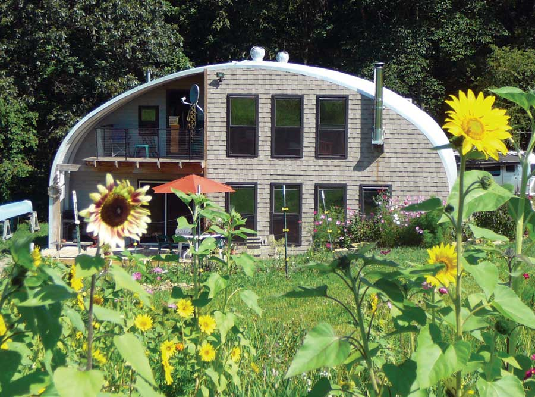
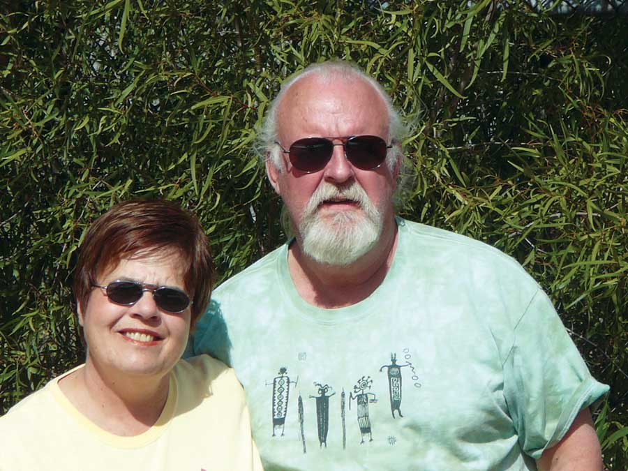
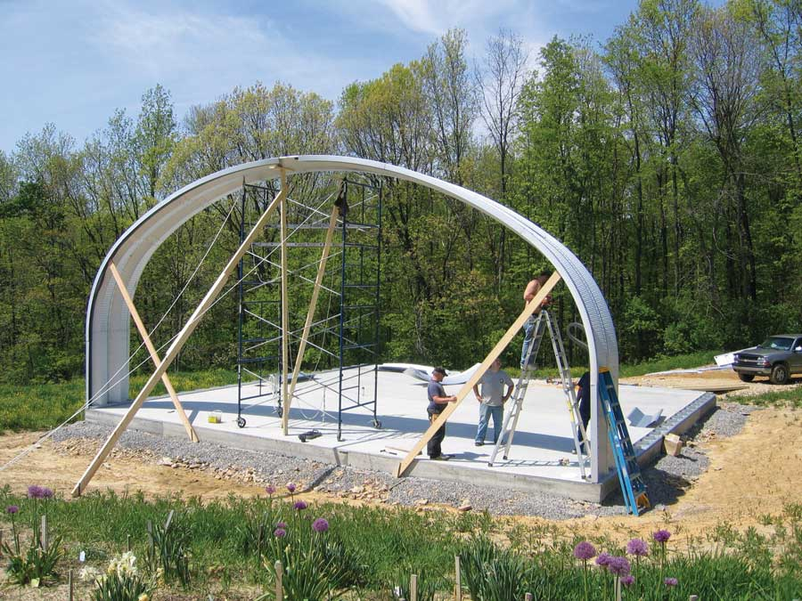
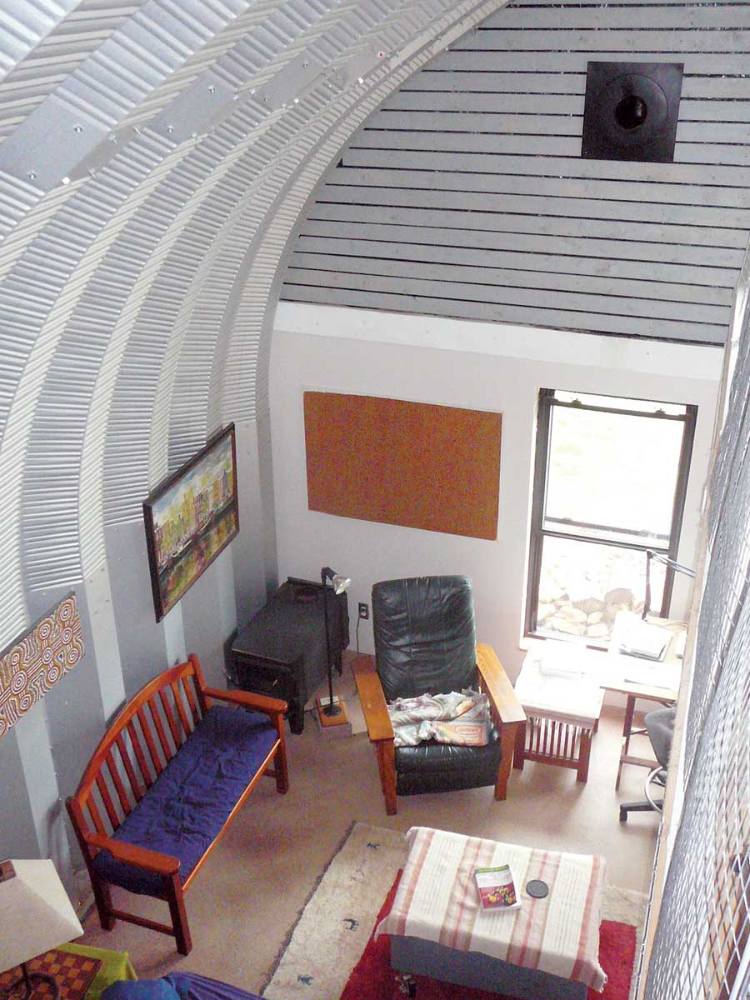
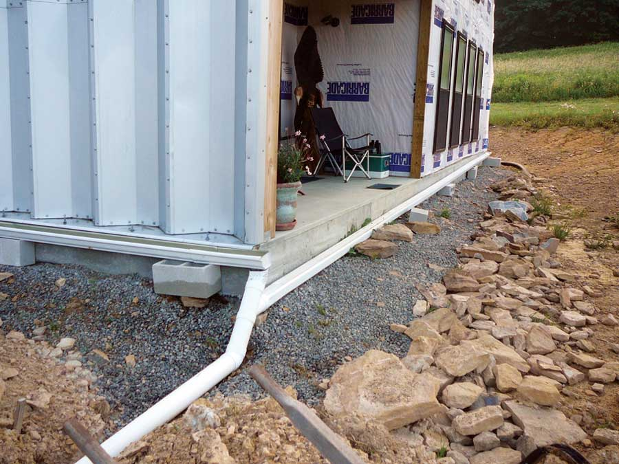
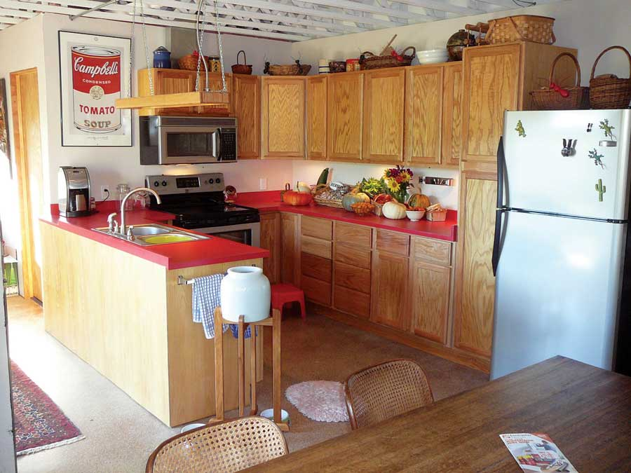
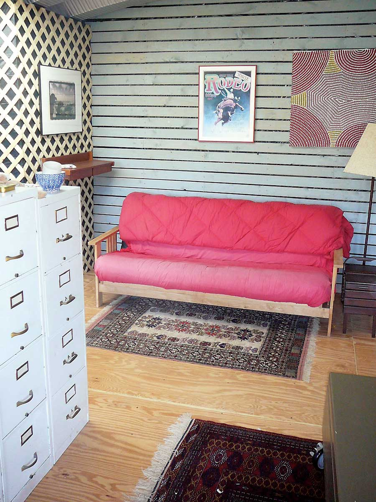

Since Mother Earth News was first published back in 1970, we’ve dreamed of improving the quality of our lives and being self-sufficient. And after spending most of our careers in the city, we finally got our chance in 2005 when 13 acres in northwest Pennsylvania - 10 of which were once part of a cornfield - came our way.
Our first challenge was to erect a building we could live in during the spring, summer and fall, and store our garden equipment in during the winter months. Eventually we expect to live in Pennsylvania year-round, but for now we enjoy exploring the South during the winters, leaving Pennsylvania after the harvest and returning in time for spring planting.
The corrugated arch-style building that we used is based on a British design dating back to World War I. In the United States, this style building was first manufactured on Quonset Point in Rhode Island during World War II in response to the need for lightweight, portable buildings that could be assembled without skilled labor.
The source of our 40-foot-by-40-foot building was SteelMaster, a company founded in 1982. Our building, an S Model, was manufactured out of 22-gauge Galvalume steel. One of the features I like about this type of building is the absence of posts and beams. The corrugated, arched wall design is self-supporting. The result is one large 40-foot-by-40-foot open square with an 18-foot peak.
To withstand wind and weather and secure the 30-year warranty, these steel buildings must be attached to the earth, either by narrow concrete footers along the base of both sides of the structure, block or wood walls erected to support the structure, or a concrete slab the full width and length of the building.
We chose to install a full slab featuring an 8-inch-by-12-inch perimeter concrete beam. This is called a “floating” slab, as it sits on a foot of gravel. Our building is situated on a slope, so water can escape from under the concrete slab should any get underneath. Inside the perimeter beam, the concrete is the standard 6 inches thick. SteelMaster provides approved engineering drawings customized to your needs, and they research and ensure compliance with all applicable codes.
The components of the building were delivered on three pallets. Looking at the small load, I couldn’t believe it was all there: Not counting the end walls, the arched structure involved bolting together 160 panels, each approximately 2-feet-by-8-feet in size. More than 3,000 nuts and bolts were required.
I originally thought I would erect the building myself, with the help of friends who volunteered. I quickly realized this project would take a more concentrated effort. Under a move-out/move-in deadline, I doubted I could meet my schedule with a weekend-warrior workforce.
The dedicated workforce was the critical component in my decision to hire a contractor. The other construction requirements included a scaffolding system and a cordless, rechargeable, electric impact drill. I was fortunate to find a local company that had experience erecting a Quonset-style building. Even then, erecting the shell took a three-man crew two weeks to complete. That’s 240 labor hours.
The building I purchased included three sides. The fourth side, made of wood, was erected by an Amish contractor. His construction crew completed the job for two-thirds of what the other contractor wanted. It took the three-man Amish crew four days to finish the south wall, including installing the windows and doors.
This south wall includes seven 3-foot-by-6-foot double-hung windows, a double door, a single door, and a 2-foot-by-3-foot office window. The large windows provide passive solar warmth in the interior space and heat the concrete slab. To supplement the passive solar heating elements, we installed radiant heat in the concrete floor and a super-efficient Vogelzang Durango woodstove, which we keep burning constantly once the outside temperature drops below 40 degrees Fahrenheit. The wood we cut to build the driveway sure came in handy!
We added much more than just the south-facing exterior wall. The entire south-end addition included the interior load-bearing wall, the stairs, the second floor, the electrical wiring, the plumbing, kitchen cabinet and countertop installations, exterior decks, and lots of other interior and exterior work.
Most of this work I have done myself, with occasional help when needed. The help I receive from my brother Duane has been a big bonus. He lives nearby, and he’s spent most of his career in the construction business. His skills and knowledge of construction techniques have been invaluable. One of my favorite Duane tips before starting a new project is: “Don’t be scared.” That’s a good motto for anyone attempting a project they’ve never done before!
In my opinion, the finishing work done in American construction can be overly expensive and time consuming. One way to minimize this is to apply an open joist system for the second floor. While I like the look of the open joists, they’re not intended to be left exposed, as they’re “rough” cut, with excess glue and machine cutting marks exposed. To improve the look, I sprayed a diluted drywall compound onto all visible joist surfaces, and finished by spraying white paint over the joint compound.
The next big issues were water and sewage. My research included visits to the county water resources department and talks with neighbors. Most folks have deep wells or springs. Some have both. Even though we get about 40 inches of rain each year, lots of folks around here have water problems during dry spells, and supplement their water needs with tanks carried in the backs of their pickup trucks, or with water deliveries from companies such as Culligan.
This discovery led me to the idea of capturing rain in a cistern and using it for non-potable purposes - the building was even designed with drip lips at the slab level. Once our metal building was up, I was amazed at how much rainwater could be captured! One square foot of rain, 1-inch deep, provides .625 gallons of water. That might not sound like much by itself, but it translates to 40,000 gallons of water per year that falls on our building.
We also installed rain gutters at the ground level of the building. That water is channeled through pipes into a 1,000-gallon concrete cistern buried underground. A shallow-well jet pump brings the water into the house from the cistern and feeds it into the PVC plumbing system for the kitchen and bathroom. While I think it may be possible to purify the cistern water to make it potable, at this time we purchase treated water for cooking and drinking.
I estimate that using the cistern saved us about $1,500 versus drilling a deep well. And from what I hear, the water quality is about the same.
On the sewage side of the equation, we installed a BioLet composting toilet, reducing water usage substantially. The BioLet 20 Deluxe, designed in Sweden, uses a nominal amount of electricity to power a fan and heater that aid the decomposition process. In the near future, we expect to invest in a solar panel to power the toilet, which the company offers. In addition, we distribute graywater to the fruit and nut trees next to our home through a system of underground pipes.
The local approach to wastewater handling is a sand mound. While we retain the option to install one of these later, we’ve saved nearly $15,000 with our approach.
During last summer’s stay at the farm, we tripled the size of our garden, adding 50 blueberry and raspberry bushes, 13 beds for beans, pumpkins and asparagus, a two-bin composter, and a few fruit and nut trees. We’ve also added a “food room” to the house for the freezer and for storing canned food and other items that may be damaged by freezing. This is the only room we’ll need to heat during the winter while we’re away. It’s fully insulated and includes a small, electric baseboard heater.
Wanting to get a jump on spring planting, we recently installed a movable greenhouse/cold frame. We’ll start temperature-sensitive plants such as tomatoes, peppers and eggplant in the ground under the greenhouse cover. Then, when the threat of frost has passed, we’ll slide the greenhouse away to expose the plants to full sun and weather. In the fall, the greenhouse will extend the growing season into the colder months. We expect the movable greenhouse to provide a total of 12 extra weeks of production, six in both spring and fall.
To address our meat (and egg!) needs, we’ll invest in chickens. We’ll give them a restricted free range during the summer, and then butcher them in the fall. They’ll be frozen, canned or eaten. When we live here full time, we’ll sustain a flock of chickens year-round.
This is a pay-as-you-go project, and we’ve kept costs to a minimum. We explore all options before spending. We will have no debt related to the farmstead, and expect to generate some income from our labors through the sale of our excess crops, shiitake mushrooms and honey.
For us, the future is now. We’re active, growing our own food, and we’re much healthier for it.
|
 BILL HAKANSON The Hakanson’s Quonset-style home in Pennsylvania. |
 GRETEL HAKANSON Bill and Lynne live in an arched steel home. |
 BILL HAKANSON The “floating” slab sits on a foot of gravel. |
|
 BILL HAKANSON A window on the south wall addition provides plenty of light and passive solar heat to the living room. |
 BILL HAKANSON Slab-level drip lips can capture up to 40,000 gallons of water per year! |
 BILL HAKANSON The concrete floors were stained to create a finished look. |
|
 BILL HAKANSON Bright colors and decorative touches give the house a cozy feel. |
|
|